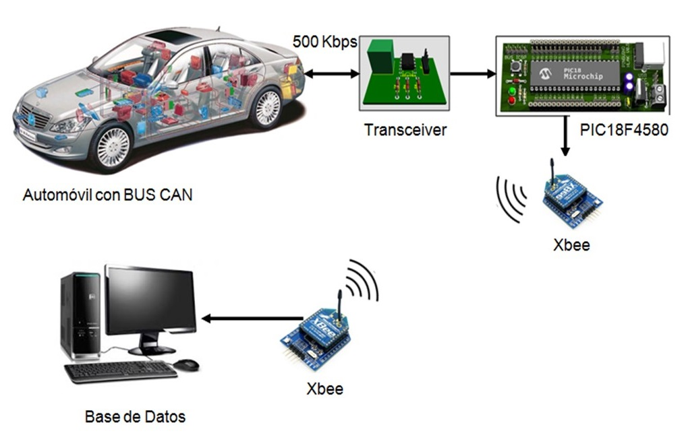
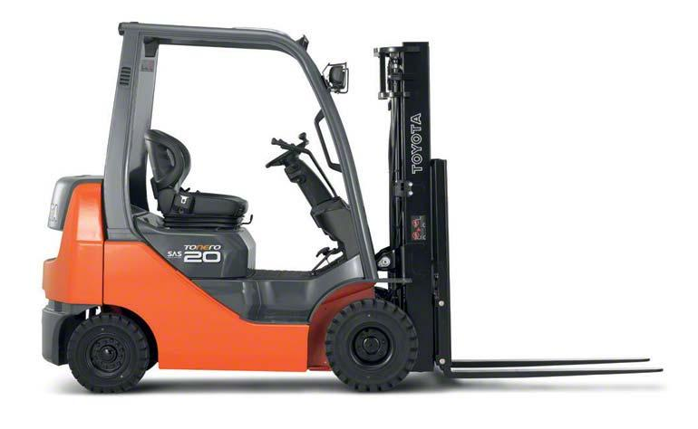
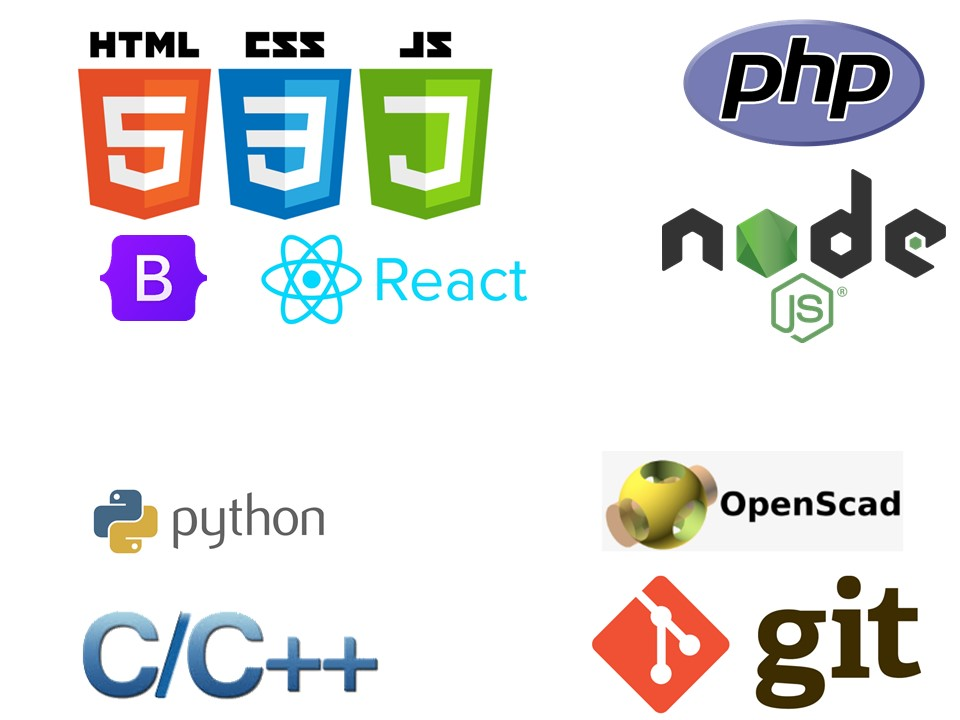
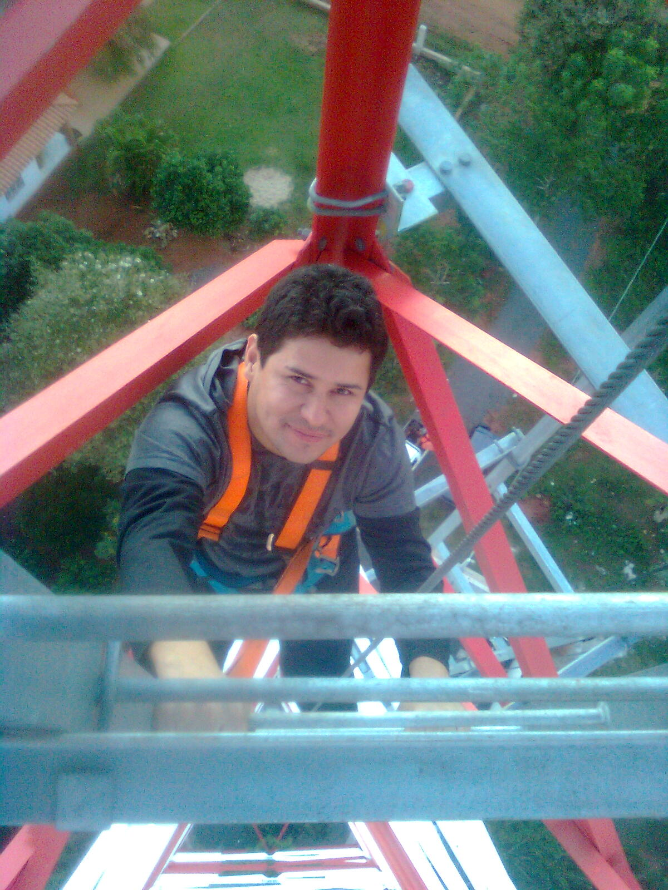

Trabajé en Hidráulica do Brasil en el Departamento de Electromecánica, entre mis tareas estaban:
Mantenimiento y reparación de equipos electromecánicos de control de máquinas hidráulicas.
Diseño e implementación de sistemas de control para máquinas hidráulicas.
Crear el Departamento de ELectrónica de la Empresa
Centro Kepler S.A.
Trabajé en Kepler como profesor
Profesor de Matemática y Física para el cursillo de la facultad de ingeniería, Politécnica y la Universidad Católica.
Cátedra de Aritmética y Algebra para cursillo de FIUNA y Politécnica
Cátedra de Física para cursillo de Politécnica
Cátedra de Cálculo, Física y Matemática para ingreso a la Universidad Católica.
Iintercom Ingeniería
Trabajé en Intercom Ingeniería S.A. en el Departamento Técnico, entre las tareas realizadas estaban:
Inspección de área
Instalación y desmontaje de equipos radioenlaces
Cambio de tecnlogía
Bolsi Plast S.A.
Trabajé en el Departamento de Control de calidad, entre las tareas realizadas estaban:
Supervisión de calidad de envase de polietilenos y otros.
Monitoreo de funcionamiento de máquinas
Experimentos en laboratorio controlado para documentar la calidad del producto en aspectos saludables y físicos.
Control de desempeño del personal técnico.
Investigador en la UNA
Trabajé en el Laboratorio de Sistemas Distribuidos (link) de la Universidad Nacional de Asunción, entre mis tareas se contemplaba:
Investigar un tema de los proyectos presentados en el laboratorio
Presentación de informes semanales
Redacción de libro de Tesis

Monitoreo Vehicular
He desarrollado un hardware para monitorear los sensores presentes en vehiculos modernos, el proyecto resulto satisfactorio logrando leer datos de un vehículo Hyundai modelo 2021, gracias a ello he obtenido mi titulo de Ingeniero Electrónico.

Control de Vehiculo Hidráulico
En la Empresa Hidráulica do Brasil S.A. me dieron la tarea de desarrollar una computadora para el control de un vehiculo apilador de carga, debido a que no existia dicha computadora en el mercado, el vehículo se logró recuperar con limitaciones comparando con un modelo original.

Hobbies
Como hobbies me gusta la programación y el diseño web, en el transcurso del tiempo iré publicando los proyectos que he estado haciendo con las herramientas de: Html, cc y js; bootstrap, react y demás...

Radio Enlaces
En la empresa Intercom Ingeniería he aprendido sobre radio enlaces y participe de un equipo técnico de visita para mantenimiento de dispositivos de comunicación celulares